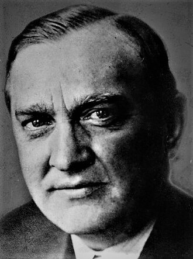

1892–1945
Polish
Functional analysis, topology, measure theory
Stefan Banach was born in Kraków and raised by a foster family. He was largely self-taught in mathematics, never completing a formal degree programme in the traditional sense. The legend, possibly embellished, is that Hugo Steinhaus overheard Banach discussing Lebesgue integrals in a Kraków park and immediately recognised his talent. Steinhaus became Banach's mentor and collaborator, and together they published the uniform boundedness principle in 1927.
Banach's 1920 doctoral thesis, published in 1922, axiomatised what we now call Banach spaces — complete normed vector spaces. The name was coined by Fréchet in 1928; before that, they were called "spaces of type (B)." The thesis also contained the fixed point theorem for contractions on complete metric spaces, which became one of the most widely used existence tools in analysis.
Banach was the central figure of the Lwów school of mathematics, alongside Steinhaus, Mazur, Ulam, and Schauder. They famously worked at the Scottish Café, recording unsolved problems in the "Scottish Book." Banach's 1932 monograph Théorie des opérations linéaires was the first textbook on functional analysis and established the field's foundational results: the Hahn–Banach theorem, the open mapping theorem, and the uniform boundedness principle.
The Second World War devastated the Lwów school. Banach survived the German occupation by feeding lice at Rudolf Weigl's typhus research institute, but his health deteriorated. He died of lung cancer in Lwów in August 1945, just months after the war ended. He was fifty-three.
| Phase | Page | Referenced for |
|---|---|---|
| Phase 5 | The Weierstrass Approximation Theorem | IOU reference to normed/Banach spaces (Phase 14) |
| Phase 6 | Vector Spaces | Banach's role in axiomatising abstract vector spaces (1920s) |
| Phase 7 | The Implicit and Inverse Function Theorems | Banach fixed point theorem as engine for existence proofs |
| Phase 9 | Completeness in Metric Spaces | Banach spaces as complete normed vector spaces |
| Phase 9 | The Banach Fixed Point Theorem | Statement and proof of the fixed point theorem (1922) |
| Phase 9 | The Banach Fixed Point Theorem | Historical: Lwów school, doctoral thesis |
| Phase 12 | Probability Spaces | Banach–Tarski paradox motivating σ-algebras |
| Phase 14 | Norms and Equivalence in Finite Dimension | Banach's programme to axiomatise functional analysis |
| Phase 14 | Banach Spaces | Definition, examples, characterisation via absolute convergence |
| Phase 14 | Banach Spaces | Historical: 1920 thesis, Lwów school, Scottish Café |
| Phase 14 | Continuous Linear Maps and the Operator Norm | Riesz and Banach: continuity equals boundedness for linear maps |
| Phase 14 | The Uniform Boundedness Principle | Statement and proof of Banach–Steinhaus (1927) |
| Phase 14 | The Open Mapping and Closed Graph Theorems | Open mapping theorem (Banach, 1929) and Banach iteration |
| Phase 14 | The Hahn-Banach Theorem | Banach's general version (1929) of Hahn's extension result |